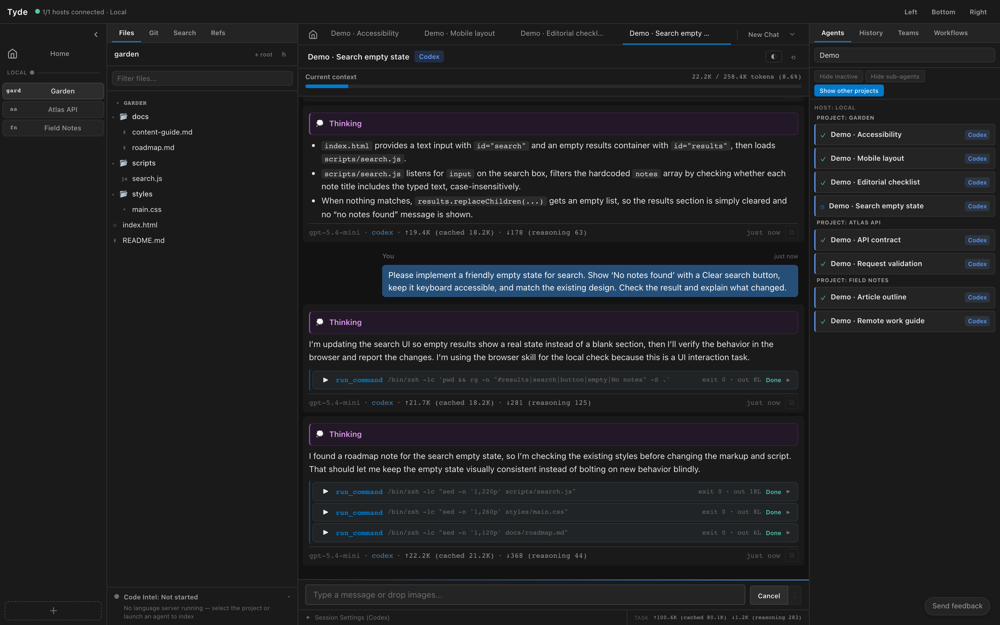

Keep many agents in view
Move between projects without losing track of who is working, who needs you, and what is ready to review.
{kind=link}

Organize around the work
Use projects to group code context, and name agents after the outcome they own. “Investigate sign-in failure” is easier to recognize in a busy workspace than several identical “New Chat” entries.
Keep separate conversations for independent tasks. An investigation, an implementation, and a review can each have their own agent. Choose the project and host before launching each one.
Follow active work
The Agents view and sidebar let you find agents and return to their conversations. Use the available grouping, search, and filtering controls to reduce the list to the work you need. The Agent Monitor offers another view of concurrent activity.
An active agent may be initializing, thinking, using a tool, or waiting for input. Open its conversation when you need the reason behind its status. A quiet transcript does not necessarily mean a process has finished.
Switching the selected project changes what you are looking at. Agents in other projects can continue working. With remote hosts, that work can also continue when you disconnect the client.
Give attention where it matters
- Check agents that need a response or permission.
- Review completed changes before assigning follow-up work.
- Interrupt a task if its direction is wrong; give a concrete correction.
- Use History for older conversations so the active workspace remains easy to scan.
Backend limits still apply. Running more agents can consume more provider capacity and money. Check the capacity information Tyde exposes for your backend, and keep expensive work tied to a clear purpose.
Keep simultaneous edits understandable
Two agents in the same project roots can touch the same working files. Tell agents which files or responsibilities they own. For independent implementation tasks, use separate workbenches and review each change before integrating it.
Read-only investigation and review often work well alongside implementation, but reviewers need to know whether the files are still changing. Give them a stable commit or wait for the implementation to reach a reviewable point.